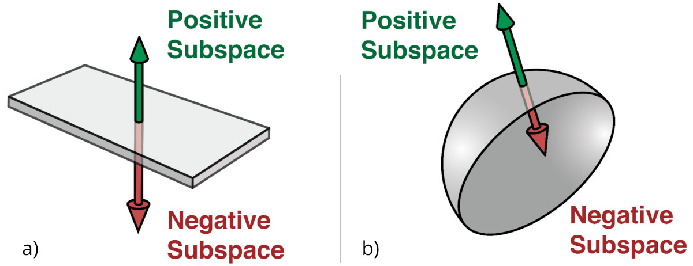
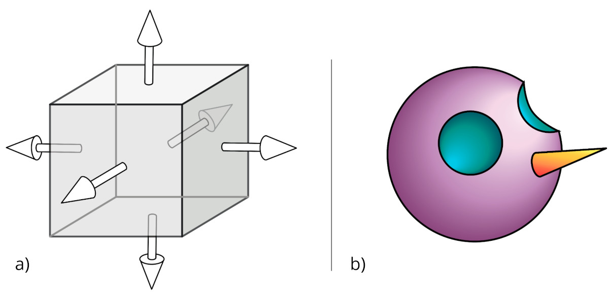
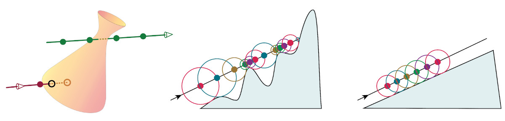
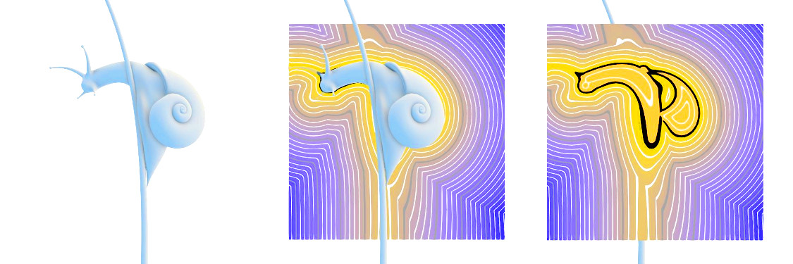
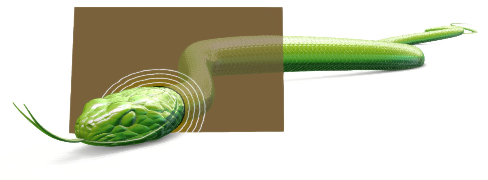
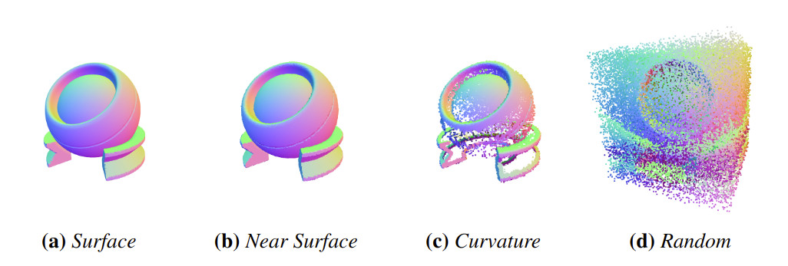

NVIDIA Research
NVIDIA Research
A Dataset and Explorer for 3D Signed Distance Functions
Towaki Takikawa, Andrew Glassner, Morgan McGuire
Please send feedback and questions to Towaki Takikawa.
Our dataset can be downloaded from here. This dataset includes 3 sampling distributions (uniformly random, near surface, on surface) of positions with their corresponding signed distance functions and gradients. We make these available as npz files. For more information on these npz files, please refer to the README of our code repostiory.
We collect a total of 67 signed distance functions from Shadertoy and other sources.
@article{Takikawa2022SDF,
author = {Towaki Takikawa and Andrew Glassner and Morgan McGuire},
title = {A Dataset and Explorer for 3D Signed Distance Functions},
year = 2022,
month = {April},
day = 27,
journal = {Journal of Computer Graphics Techniques (JCGT)},
volume = 11,
number = 2,
pages = {1--29},
url = {http://jcgt.org/published/0011/02/01/},
issn = {2331-7418}
}
You can download the uncompressed figures as a zip (12.1 MB) here.
Four analytic signed distance functions (SDFs) from our dataset, whose zero level sets are detailed 3D shapes. These are visualized in our real-time SDF explorer, with isosurfaces in space shown on a cutting plane.
Left: An infinite right circular cylinder along the Z axis. Right: A bumpy landscape on a 2D domain. The points with the z value of 0 are marked with a thick black line. We call each set of points with the same height an isocontour.
(a) A segment of a plane (thickened for clarity). The surface normal points to the positive subspace. Points in the plane itself form the zero subspace, and the remaining points form thea negative subspace. (b) A sphere cut in two. The points outside form the positive subspace, points on the surface form the zero subspace, and points inside form the negative subspace.
(a) The space on the negative side of all six planes forms the inside, or negative subspace, of the composite cube. (b) Using CSG to start a face. The purple sphere has two smaller spheres (blue) removed with subtraction, and a cone (orange) added with union.
Left: Intersecting a SDF by ray marching. The green ray passes through the shape but the marcher never detects the intersections because the sampling points (dots) created by equal steps all happen to lie outside the shape. The marcher finds the intersection along the red ray, because one of the sample points (the red circle) lands inside the object, initiating a step of numerical root-finding to locate the intersection point (the black circle). Middle: A 2D example of sphere marching. At each step along the ray (a dot), we find a guaranteed lower bound to the surface (the radius of circle around that dot). We can advance at least that far along the ray for the next step. Right: Here the ray is nearly parallel to a surface, so the step size will be nearly constant. The closer the ray is to the surface, the smaller the step size.
Some problems in an SDF. Left: A grand piano. Right: A close-up of the keys. The smaller keys (black on a real piano) appear jagged on one side due to the accumulation of numerical errors.

The user interface for the explorer tool, here visualizing the Fish SDF using an emerald matcap. Each of the on-screen elements can be configured, including copyright text display and background image.
Five of the many shading options supported by the SDF Explorer tool, applied to the OldCar model. (a-c) Three examples of data-driven matcap shading. Thousands of matcap spheres are available online. (d) Surface normal (x,y,z) values mapped to (r,g,b). (e) Magnitude of the mean curvature visualized as a gradient from flat (black) to maximally curved (red).
Rendering with a cutting plane. The black line corresponds to the zero level-set, and the lighter lines show the isocurves at equally-spaced thresholds.
Diagnosing a slow render time. The contour lines on the cutting plane show that this snake was modeled with a truncated SDF, because after a certain distance the contours no longer appear. This explains the slow rendering time for this model.
Detecting SDF discontinuities. Middle: A car with its SDF on a cutting plane. Left: A close-up from the center top of the cutting plane, showing disconnected contour lines. Right: A close-up from the right side of the cutting plane, showing contours lines touching one another.
Visualizations of four different patterns from our samplers. Each point cloud contains 1 million samples. The coloring comes from assigning the (x,y,z) components of the SDF's surface normal at each point to red, green, and blue, respectively.}
We would like to give a big thanks to Joey Litalien for his help with gathering some of the signed distance functions and writing an early version of the deserializer. This website is mostly derived from the website for NGLOD, which Joey also hugely contributed to! We would also like to thank Zander Majercik and Michael Stengel for their help with G3D.
The signed distance functions featured in our dataset are derived from the works of many artists around the world, released under various open source licenses. Details about the source licenses are all available inside Table 1 of the paper as well as the source code. Most of the works were collected from Shadertoy. These artists include Inigo Quilez, dr2, XorDev, yuntaRobo, sukupaper, eiffie, Felipe Alfonso, BigWings, Antonalog, Thomas Hooper, Paul Malin, jedi_cy, monsterkodi, Kim Berkeby, Flopine, dakrunch, Dean Edis, Gary Warne, Florian Berger, al13n, ZGuerrero, klk, Maurogik, nimitz, and Wes Bakane.
One of our authors, Morgan McGuire was at NVIDIA for the majority of this work.